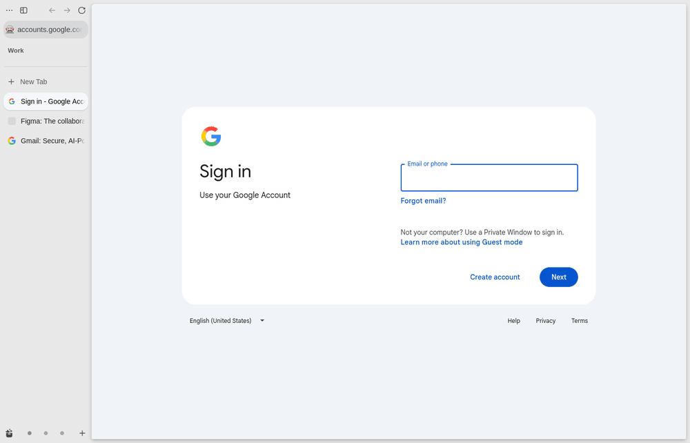
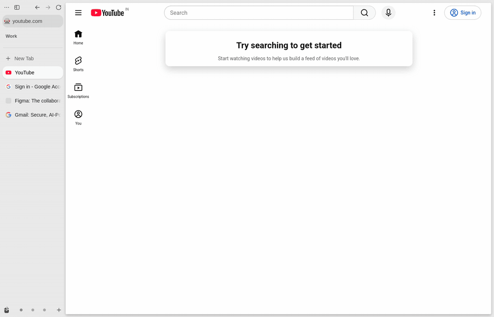
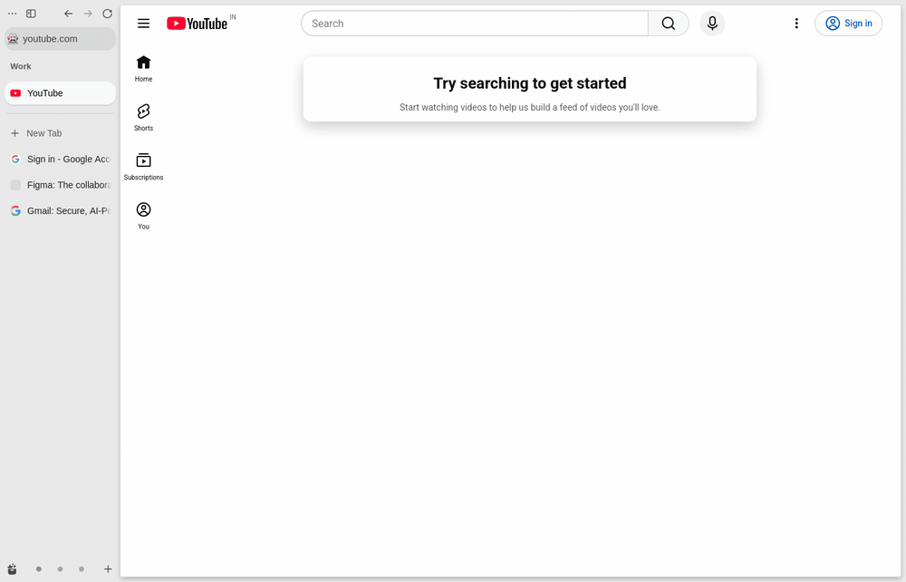

Zen, wrapped
src/browser/Tabs, spaces, folders, containers, sessions, toasts.
Describe the browser you want. Your agent builds it.
New keys, a palette, tab rules, panels that don't exist yet. If you can say it, your agent ships it into any Firefox-based browser.
01 The agentic era
An engine, a sandbox, weekly security fixes↗, decades of web compatibility. You don't need a new browser. You need your own layer on a good one.
03 The wall
Extensions live in a sandbox.↗ Tabs, toolbar and dialogs are native C++ that no script reaches.↗
05 The way in
Its interface is markup, CSS and JS. A startup hook runs your JS and CSS inside it, without patching the browser,↗, in any Firefox-based browser↗, while its updates keep coming.
Make the tabs compact and tint them per space
CSSOpen GitHub links in my Work space
JSAlt+S sends this tab to Acad and mutes it
keys06 Looks
The same Zen window, restyled by one stylesheet each, all written from a prompt.


07 Mod formats
Extensions get pages. Zen mods get CSS.↗ Sine mods get the browser.↗
Nothing is patched: most forks change a browser's source and rebuild it, while Sine only loads your files at startup. Scripts from outside Sine's store run only after you allow them.
08 Trust
Any mod with this reach can take your cookies and sessions.↗ Trust only code you've read↗: that's why Zencast is a template, not a product.
The one-line install trusts my builds. A fork trusts only you.
09 My way
Inspired by VS Code's command palette↗ and Raycast↗: one box, type anything, all from the keyboard.



Mine, not yours. Fork it and change them.
10 The template
Fork it and say how you work. Here's what your agent finds.
Add Alt+S to send this tab to my Acad space and mute it
Added “Send to Acad and mute” on Alt+S. Zen doesn't use that key, a new scenario proves it in a headless Zen, and it's installed. Restart Zen to use it.
Example sessions.
src/browser/Tabs, spaces, folders, containers, sessions, toasts.
.claude/skills/Add a command, find internals, cut a release.
pnpm opsBuild, test in a throwaway headless browser, bench, install, release.
scripts/install/Installs Sine and the mod on Linux, macOS and Windows, with a setup skill for agents.
src/keys/Chords, when-contexts, and a palette every command joins.
pnpm ops releaseRelease branch, one-line installers, Sine updates.
gh repo fork Noelithub77/zencast --cloneFree and open source.